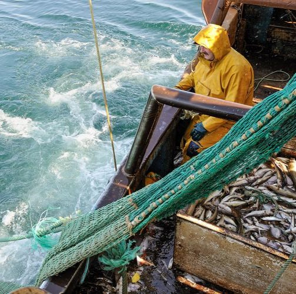

Les activités humaines ont conduit à une diminution des populations
de hareng bleu, perturbant l'équilibre des écosystèmes marins. Cette
disparition menace également les espèces qui dépendent de ce poisson
comme source de nourriture.
A l'échelle mondiale, elle menace
la sécurité alimentaire de millions de personnes et perturbe les écosystèmes
marins. La surpêche, combinée à des pratiques de pêche non durables et à la
pêche illégale, réduit considérablement les populations de poissons. De plus,
le réchauffement climatique et la pollution des océans exacerbent la
situation en modifiant les habitats marins des espèces.